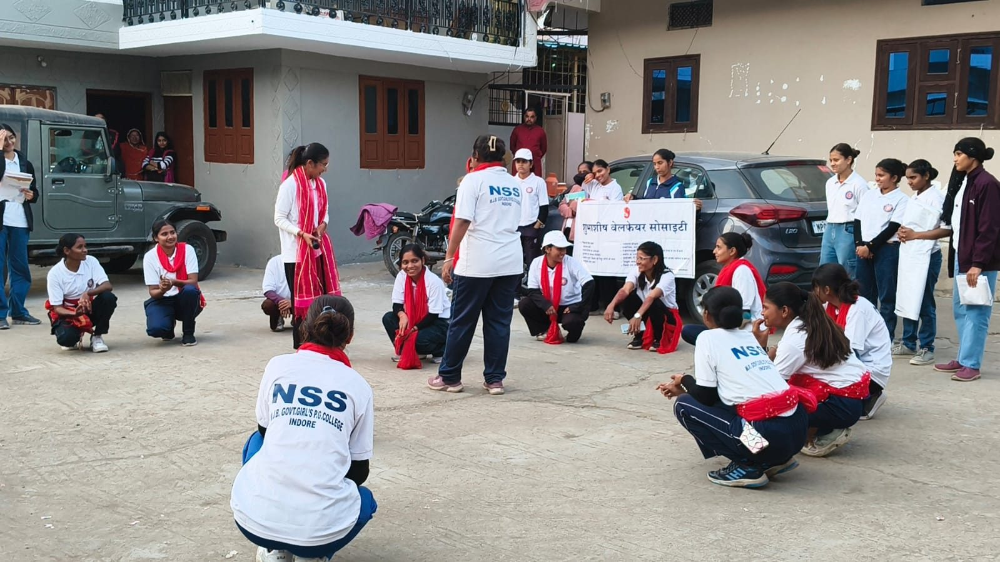

Street play (nukkad natak)
Our volunteers, with NSS student volunteers, perform nukkad natak in bastis around Indore. The plays take on child marriage, addiction and other social issues, and draw children, mothers and neighbours into the conversation.
- Where
- Bastis around Indore
- About
- Child marriage, addiction
- With
- NSS student volunteers